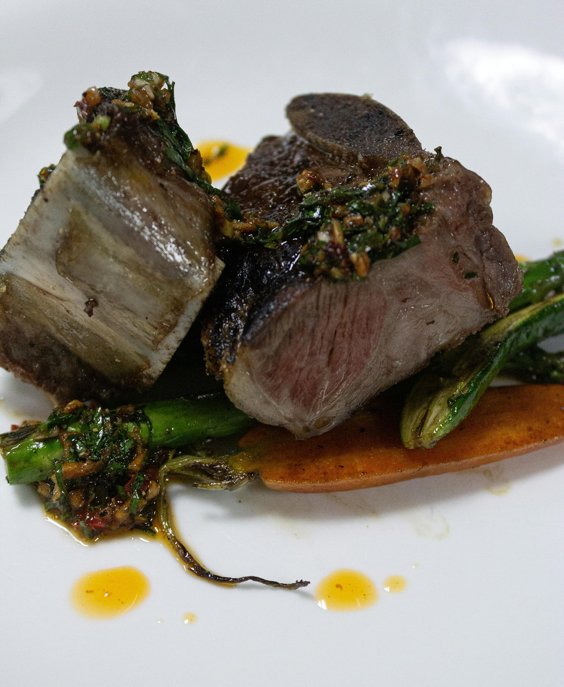

Home
Filet Mignon

Ingredientes
- Carne
- Sal Fina
- Pimienta
- Manteca
Pasos
- En primer lugar, ya conoces la clave de los mejores chefs para que la auténtica calidad de la carne salga a relucir: atempera 1 hora cada uno de los solomillos que vayas a emplear para la receta.
- Después, engrasa de manteca la sartén hasta que coja temperatura, pon el filete y déjalo haciéndose en función del gusto de los comensales. Ya sabes: 2 minutos si lo quieres poco hecho, 3 minutos al punto y 4 si lo quieres más pasado. Una vez transcurrido, dalo la vuelta para que se haga por el otro lado.
- Como siempre te decimos, la clave es poder saborear cada uno de los matices y un filete demasiado hecho no te permitirá apreciarlo. Déjalo reposar en caliente durante 5 minutos para aprovechar mejor sus jugos. Puedes dejarlo en el horno a 50ºC para conseguirlo.
- Finalmente, emplátalo con el acompañamiento y et voilá.